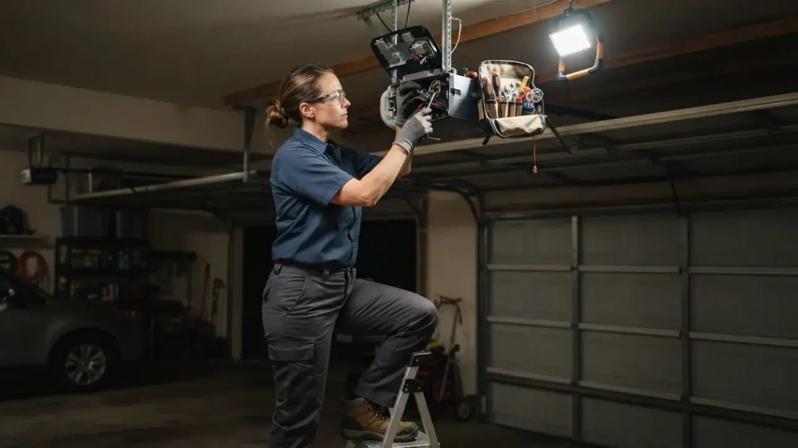

Broken spring, snapped cable or dead opener - we roll out and fix it.
24/7 Garage Door Repair in Tampa, Florida
A door that jams at 2 a.m. or a spring that snaps before work cannot wait until morning. Our 24/7 garage door repair in Tampa answers around the clock, including nights, weekends and holidays, for doors that will not open, will not close, or are stuck in a position that is not safe. A live dispatcher takes your call, and the truck carries the springs, cables, rollers and remotes needed to finish most jobs in one visit.
Live dispatcherUpfront optionsBacked workmanship
The basics
What Is 24/7 Garage Door Repair?
24/7 garage door repair means a technician is on call at any hour for a door that has failed in a way that traps a car, leaves the home open, or risks dropping. The work covers the whole system, springs, cables, tracks, rollers and the opener, because a midnight failure is rarely one clean fault. The aim is simple: make the door safe and working again on the first visit, even at 2 a.m., and leave you with a written record of what was done.
What's included
What Our 24/7 Garage Door Repair Includes
Every emergency call follows the same backbone: a full diagnosis, the repair itself, safety testing and a written warranty. What changes is the fault we find, not the standard we work to. Here is what is covered when we roll out at any hour.
Full Door Diagnosis
Before any part comes off, we test the door balance by hand, inspect the torsion springs, cables, drums, rollers, hinges and tracks, and check the opener and safety sensors. You get a plain explanation of what failed and the price to fix it before work starts, so a late-night call never turns into a blank cheque.
Spring and Cable Repair
Broken torsion and extension springs and snapped galvanized steel cables are replaced on site from truck stock. We fit matched spring pairs, wind with proper winding bars and set tension with a torque wrench, so the door balances the same on both sides instead of failing again in a few weeks.
Track and Roller Service
Bent tracks are straightened or replaced, and worn rollers are swapped for new nylon or steel units matched to the door. We realign the whole run to the door and lubricate the moving parts, because a track left bent will eat the next set of rollers.
Opener and Remote Fix
We repair or replace openers from LiftMaster, Chamberlain, Genie and Craftsman, then reprogram your remotes and wall keypad. Safety sensors are realigned and tested so the door reverses correctly, which matters most when a door has already failed once that day.
Safety Testing
Before we leave, we cycle the door at least three times and test the auto-reverse and photo eye sensors against UL 325. A door that has jammed or dropped once gets no shortcuts on the way out.
Written Warranty
You get a written warranty on parts and labor: 1 year on labor and up to 3 years on torsion springs and openers. Should the same failure come back inside that window, the return visit is on us.
Service overview
What 24/7 Garage Door Repair in Tampa Covers
24/7 garage door repair in Tampa is an emergency service that opens, closes, balances and secures residential doors at any hour of the day or night. The calls repeat in familiar patterns: a door stuck halfway open in Seminole Heights at 6 a.m., a snapped cable in South Tampa after a storm, a LiftMaster opener that quit in Westchase. Each one gets the same treatment, secure the door first, find the real cause, then repair it.
Our trucks carry torsion springs, extension springs, galvanized steel cables, nylon and steel rollers, hinges and remotes for LiftMaster, Chamberlain, Genie and Craftsman openers, so most repairs finish in one visit. Every repair follows UL 325 safety standards and ANSI/DASMA 102, and we test the auto-reverse and photo eye sensors before we leave, day or night.

How we workWe verify the cause, compare realistic options, and confirm the repair before we leave.
The service timeline
What Happens When You Call
Night work needs a tighter routine than day work, because the house is asleep and the fault is usually urgent. These five steps keep the visit predictable from the first ring to the final test.
Phone Triage
You call and speak to a live dispatcher, not a machine. We ask what the door is doing, whether it is stuck open or closed, and whether anyone is trapped, then give you an arrival window and what to avoid doing while you wait.
Arrival and Safety Check
A technician arrives in the window we quoted, usually the same day. The first job is safety: the door is secured so it cannot drop, the opener is disconnected if needed, and the area is checked before anyone works under a loaded spring.
Full Diagnosis
We test the balance by hand, inspect the torsion springs, cable drums, winding cones, rollers, hinges and tracks, and check the photo eye sensors with a sensor alignment tool. You get the cause in plain words and a fixed price before we start.
Repair On the Spot
Most repairs take 45 to 90 minutes. Springs and cables come off the truck, tracks are trued, and the opener is repaired or replaced on the spot rather than booked for another day.
Test and Walkthrough
We cycle the door at least three times, test the auto-reverse and safety sensors, and check the opener remote and wall keypad. Then we walk you through what failed, what was replaced, and what to watch for, so the door is safe to use before we leave.
Tools & methods
Tools and Methods We Use
Emergency work is won or lost on the truck. These are the tools that let us finish a midnight repair properly instead of patching it and promising to return.
Torsion spring winding bars
Torsion spring winding bars let us wind and unwind torsion springs under load in a controlled way. We never use screwdrivers or makeshift bars, because a slipped bar can injure the technician and wreck the spring.
Garage door torque wrench
A torque wrench sets the exact tension on spring sets and bolts so the door balances correctly and the hardware does not loosen over time. Guesswork here is what causes a door to drift out of balance weeks later.
Garage door cable drums and winding cones
Cable drums and winding cones are replaced when cables have jumped or the drum is worn. A grooved or wobbling drum will fray a new cable fast, so we check it before threading anything.
Garage door track bender
A track bender straightens bent vertical and horizontal track without kinking the steel, so the door rolls smoothly instead of binding. It is the difference between a track that lasts and one that needs replacing next month.
Garage door sensor alignment tool
A sensor alignment tool lines the photo eye sensors up precisely so the door closes reliably and passes the UL 325 safety test. After a door has jammed or dropped, the sensors are almost never still square.
Garage door opener remote tester
A remote tester confirms whether a remote is transmitting at the right frequency or whether the opener receiver is the problem. It stops us replacing a motor when the real fault is a dead remote or a failed receiver.
Garage door panel lift
A panel lift holds replacement panels safely during installation so sections line up correctly and nobody gets hurt. On a night call, with a tired household and a heavy door, that support matters even more.
Use cases
When Tampa Homeowners Call Us
Night and early-morning calls rarely look alike, even when the fault sounds the same. These are the kinds of jobs our 24/7 trucks handle most.

Off-Track Door in South Tampa
A door in South Tampa had jumped the rail and hung halfway open overnight, leaving the garage exposed. → How we handle it: We secure the door, true the bent rail with a track bender, reseat the rollers, and run the door through several cycles to confirm it tracks straight.
Dead Opener in Westchase
A Westchase homeowner's LiftMaster opener would run but not lift the door, and the car was trapped inside. → How we handle it: We disconnect the opener, test the door balance by hand, find the failed drive gear, and rebuild the opener on the spot, then reprogram the remotes.
Problems we solve
Problems We Fix on 24/7 Garage Door Repair Calls
These are the calls we take most often in Tampa, at every hour. Each one has a different fix, which is why the visit starts with a diagnosis rather than a guess.
Broken torsion spring leaves the door too heavy to lift
Most spring jobs take 60 to 90 minutes. We replace the broken spring and its matched partner, wind them to the correct tension, and test the balance so the door holds at the halfway point instead of slamming or drifting.
Snapped cable drops one side of the door
Off-track repairs usually run $200 to $500 depending on how much track was damaged. We true the rails, reseat the rollers, and check the cables and springs, because a derailment is usually a symptom of a part that already failed.
Door off track and stuck open overnight
A door that hangs open overnight is a security problem, not just an inconvenience. We secure it first, find whether a snapped cable, a failed spring or a bent track caused it, and repair the cause so it closes and locks properly.
Opener runs but the door will not move
Most opener repairs are $150 to $400 and finish the same visit. We test the motor, gears and receiver, and if the unit is past saving, we install a new LiftMaster or Chamberlain opener and reprogram your remotes.
Pricing process
What 24/7 Garage Door Repair Costs
$150 - $500 for most emergency repairs; $180 - $450 for spring replacement
Type of failure
Spring replacement is usually $180 to $450, cable work $150 to $350, and off-track repair $200 to $500 depending on how much track and hardware was damaged. A sensor realignment is a smaller job, while a full opener replacement sits at the top of the range.
Door size and weight
A single-car door uses lighter springs and hardware than a double-car door. Heavier insulated doors need higher-cycle springs, which cost more but last longer, and the labor follows the weight of the door.
Parts needed
A simple roller swap is cheap. The price climbs when the job needs a matched spring pair, a new opener, or several parts at once, and we quote every part before we fit it.
Cost factors at a glance
| Cost factor | What affects the price |
|---|---|
| Typical range on this page | $150 - $500 for most emergency repairs; $180 - $450 for spring replacement |
| Type of failure | Spring replacement is usually $180 to $450, cable work $150 to $350, and off-track repair $200 to $500 depending on how much track and hardware was damaged. |
| Door size and weight | A single-car door uses lighter springs and hardware than a double-car door. |
| Parts needed | A simple roller swap is cheap. |
Ranges are the ones stated on this page; you get a written estimate before work starts.
Customer reviews
What Tampa Homeowners Say
★★★★★
“Our torsion spring snapped at 5:40 a.m. with both cars trapped inside. I called and a real person answered on the second ring. The tech was in our driveway by 7:15, had the old springs out, new ones wound, and the door balanced before 8:30. Price matched the quote exactly. No drama.”
★★★★★
“After a storm, our door came off the track and would not close. They secured it, straightened the bent track, replaced two rollers and reset the cables. Took about an hour and a half. What I appreciated was the explanation of why it happened and what to check after the next big storm.”
★★★★★
“Our LiftMaster opener would run but not lift the door. They diagnosed a stripped gear and a worn cable, fixed both the same night, and reprogrammed our remotes and keypad. The door is quieter now than it was before it broke. Fair price for a midnight call.”
Book with confidence
What to Look for Before You Book
A late-night breakdown is when a rushed choice costs the most. These checks still apply at 2 a.m., and a good company will answer them plainly.
- Before any work starts, ask for the licence number and confirm it matches the company name on the quote.
- Confirm the dispatcher can send a technician tonight, and pin down the arrival window before you agree to anything.
- Insist on a written price covering parts and labour, and ask how extra work found mid-job gets priced.
- Ask how long the parts and the labour are covered, and get that warranty in writing rather than as a promise.
- Check that the visit ends with a safety reverse and sensor test, even when the call runs late at night.
- When the technician arrives, confirm the vehicle is marked and they can say which company sent them.
Night calls
Night Calls: What to Expect When You Ring at 2 in the Morning
Calling at 2 in the morning is different from calling at 2 in the afternoon, and it helps to know what happens. The phone is answered by a dispatcher, not a machine, who will ask what the door is doing, whether the house is secure, and whether anyone is hurt. That short conversation decides the response: a door stuck open with the house exposed gets a technician straight away, while a door stuck shut with the car inside gets the first morning slot, because the house is secure.
The technician who arrives at night carries the same stocked truck as a daytime visit, so most night calls are fixed in one visit. The work is the same, the safety tests are the same, and the price is agreed before the work starts, just as it is in the day. The only difference is the hour. You do not need to have the garage cleared or the car moved before the technician arrives, but it helps to keep the area around the door clear and to keep children and pets out of the garage while the work is done.
- Answered by a person: the dispatcher asks what the door is doing and whether the house is secure.
- Priority decided by risk: a door stuck open gets a technician straight away; a door stuck shut gets the first morning slot.
- Same stocked truck: most night calls are fixed in one visit, because the truck carries the common parts.
- Same process: diagnose, agree the price, then work, with the same safety tests as a daytime visit.
- Same price: the repair is priced the same way, with a firm number agreed before work starts.
Is it urgent
When a 24/7 Call Is an Emergency and When It Can Wait Until Morning
The 24/7 line is there for emergencies, but not every night-time problem needs a night-time visit, and the dispatcher will be honest with you about which it is. A door stuck open, a door that has fallen, a door hanging by one cable, or a spring that has snapped with someone needing to leave urgently are all emergencies, and a technician will come straight away. A door that is stuck shut, a remote that has stopped working, or a door that is noisy but still working can usually wait until the morning, and the dispatcher will book the first slot.
There is no penalty for calling and asking. If you are unsure, describe what the door is doing and whether the house is secure, and the dispatcher will decide the timing with you. What matters is that you do not try to fix it yourself at night, when you are tired and the light is poor, because that is when injuries happen. A door that is left alone overnight, with the house secured from the inside, is safer than a door that has been forced by someone who is half asleep.
- Come now: a door stuck open, a fallen door, a door hanging by one cable, or an urgent need to leave.
- First thing in the morning: a door stuck shut with the house secure, a dead remote, or a noisy door that still works.
- Call and ask: if you are unsure, describe it and let the dispatcher decide the timing with you.
- Do not fix it at night: tired hands and poor light are when injuries happen, so leave it to the technician.
- Secure the house: lock the interior door and move valuables out of sight if the garage is open.
How much does 24/7 garage door repair cost in Tampa?
Most emergency repairs in tampa run $150 to $500 in 2026. A torsion spring replacement is $180 to $450, cable replacement $150 to $350, and off-track repair $200 to $500. Opener repairs land between $150 and $400. You get the exact price before we start, and there is no separate after-hours surcharge buried in the labor.
Is there 24 hour garage door repair in Tampa?
Yes. We staff phones and dispatch trucks 24 hours a day, seven days a week, including holidays, across tampa and Hillsborough County. A live dispatcher answers, gives you an arrival window, and sends the nearest technician. Most calls in Tampa get a truck on site the same day.
How fast can 24/7 garage door repair arrive in Tampa?
Typical arrival is the same day for Tampa addresses, and often faster in South Tampa, Westshore and Downtown. If you are out in Riverview, Brandon or Lutz, expect a later same-day visit. We quote a real window when you call and text you when the technician is on the way.
Who offers 24/7 garage door repair in Tampa?
We do, along with a handful of other local shops. What separates us is that we carry torsion springs, cables, rollers and openers on the truck, so most jobs finish in one visit. Ask any company whether they stock parts or just diagnose. We follow UL 325 and DASMA standards.
What should I do while I wait for a 24/7 garage door repair technician in Tampa?
Stay clear of the door and do not try to force it open or closed, especially if a spring or cable has failed, because a door in that state can drop without warning. If the door is stuck open, do not leave the garage unsecured if you can avoid it, and move cars and valuables out of the way. If the door is stuck closed and your car is inside, leave it there until the technician arrives. A short phone description of the noise, the position of the door, and what happened helps the dispatcher send the right parts.
Can a 24/7 garage door repair fix my door in the middle of the night in Tampa?
Yes, in most cases the technician carries common parts such as springs, cables, rollers, and opener gears on the truck, so the repair can be finished in one visit even at night. If a part is unusual or has to be ordered for your door model, the technician will make the door safe and secure first, then return with the part. You get a firm price before work starts, so there are no surprises on the bill.
Is it safe to leave a broken garage door until morning in Tampa?
It depends on the fault. A door stuck open leaves your home unsecured, and a door with a broken spring or cable can fall, so those should not be left. If the door is closed and staying put, and the opener is unplugged so nobody tries to run it, waiting until morning is usually fine. When in doubt, call and describe the problem, and the dispatcher can tell you whether it needs a night visit.
Is someone really available at 2 in the morning for garage door repair in Tampa?
Yes. The 24/7 line is answered around the clock by a dispatcher, not a machine, who will ask what the door is doing and whether the house is secure. A door stuck open, a fallen door, or a door hanging by one cable gets a technician straight away, at any hour. A problem that can wait safely gets the first slot in the morning, and the dispatcher will tell you honestly which it is.
What information should I have ready when I call for 24/7 garage door repair?
Three things help most: what the door is doing, whether it is stuck open or shut, whether you heard a bang, and whether the opener is running without moving the door. It also helps to say whether the house is secure and whether anyone needs to leave urgently. You do not need the model number or the measurements; the technician will check those on site. A short video of the noise or a photo of visible damage can speed up the diagnosis.
Will a 24/7 garage door repair cost more than a daytime visit?
No. The repair is priced the same way as a booked visit, with a firm number agreed before work starts, parts and labor included. There is no separate charge for the hour of the call. If the job needs a part that is not on the truck, the technician will secure the door, tell you the price and the lead time, and book the follow-up, so there are no surprises.
Related services
Related Services

Garage Door Repair
General repair covers the whole system, not just the one part that failed. If your door is off track, noisy, or binding, start here for a full diagnosis.
Garage Door Spring Repair
When a torsion spring snaps, the door turns into dead weight and the opener strains against it. We fit matched pairs, wind them with proper bars, and balance the door so it holds level.
Garage Door Opener Repair
After a storm-season surge, openers often hum, trip the breaker, or drop their remote pairing. We repair LiftMaster, Chamberlain, Genie and Craftsman units and check the safety reverse before we leave.Ready when you are
Need 24/7 Garage Door Repair in Tampa Right Now?
A live dispatcher is on the phone around the clock, and most Tampa calls get a truck on site the same day. Call now, tell us what the door is doing, and we will give you an arrival window and a straight price before anyone picks up a wrench.

Talk with the local team
Request 24/7 Garage Door Repair
Call, text or email and a real person answers, day or night. Tell us what the door is doing and we will give you a price range on the spot plus the soonest arrival window. Most calls placed before mid-afternoon get a same-day visit anywhere in Hillsborough County.